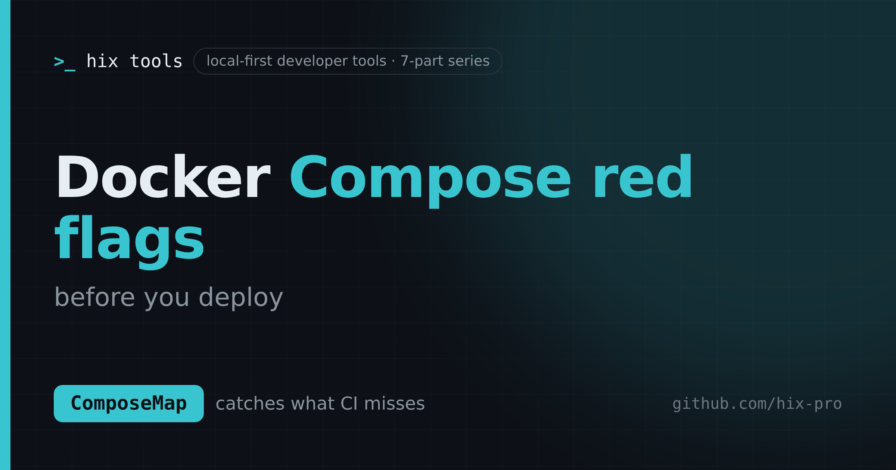
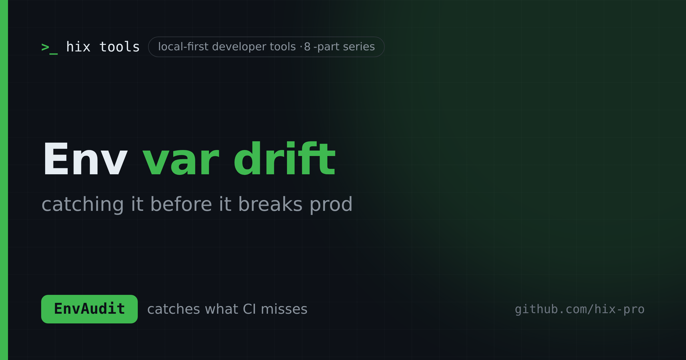
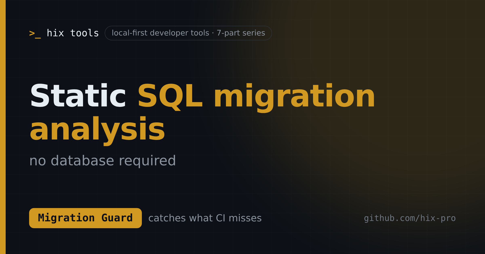
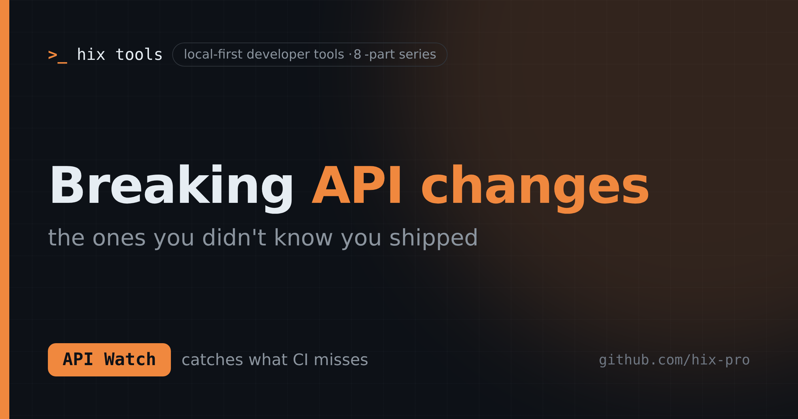
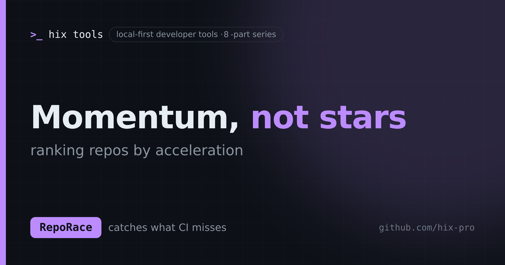
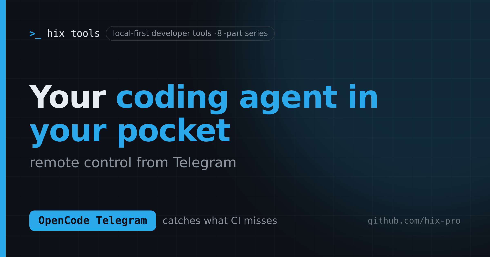

Writing
Notes on what CI misses.
Eight practical deep dives into the checks that normally depend on someone remembering: env drift, dangerous migrations, contract breaks, workflow risk, Compose red flags, Terraform plan risk, agent remote control, and star velocity — plus the hix runner that ties ten local-first tools together. Every tool is local-first, and every post ends with what it will not do.
The series
8 posts · 2026
ActionLens
16 things to check in your GitHub Actions workflows
ActionLens turns any GitHub Actions YAML into a job graph, real matrix size, token permissions, and a 16-rule security review.

ComposeMap
Docker Compose red flags before you deploy
ComposeMap turns a Docker Compose file into a service graph and a plain-English risk review, entirely in your browser.

EnvAudit
Catching env var drift before it breaks prod
EnvAudit scans a repo for env vars that are missing, undocumented, unused, or exposed as secrets — and fails CI when code and configuration disagree.

Migration Guard
Static SQL migration analysis without a database
Migration Guard parses SQL and flags destructive statements, blocking DDL, and breaking renames statically — no database connection needed.

API Watch
Breaking API changes you didn't know you shipped
API Watch diffs OpenAPI specs against a local baseline and classifies every change as breaking or safe, with CI-ready exit codes.

PlanGuard
Terraform plans hide the risk. PlanGuard reads them.
PlanGuard reads terraform show -json output and flags the changes a plan diff treats equally — stateful destroys, public ingress, wildcard IAM, disabled encryption, and plaintext secrets.

RepoRace
Momentum, not stars: ranking GitHub repos by acceleration
RepoRace ranks GitHub repositories by acceleration, not raw stars — momentum and breakout leaderboards backed by local SQLite.

OpenCode Telegram
Remote-controlling OpenCode from Telegram
OpenCode Telegram puts a local OpenCode server in your pocket: streaming replies, session switching, and permission approvals from your phone.